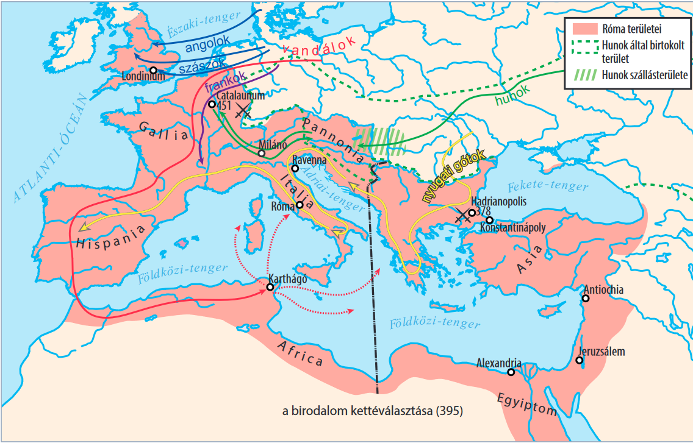

Hódító birodalmak
vissza a főoldalra
-
Egy eurázsiai birodalom: a hunok. A Római Birodalom bukása és örökösei
Egy eurázsiai birodalom: a hunok. A Római Birodalom bukása és örökösei
Népmozgások a történelemben többször előfordultak, de az ókor utolsó évszázadaiban lezajlott népvándorlás két-három nemzedéknyi idő alatt megrendítette, és utóbb elsöpörte a sok évszázadig fennálló Római Birodalmat. Idézzük fel, mit jelentett a romanizáció folyamata a provinciákban! Hogyan próbálta a Római Birodalom elhárítani a külső támadásokat a 2. századtól kezdve?
A népvándorlás megindulása
A 4. században minden eddiginél veszedelmesebb nép érkezett keletről: a hunok. Kelet-Ázsia felől nyugat felé vándorolva sok népet mozdítottak ki addigi szállásterületükről. Különböző germán törzsek (például gótok, frankok és vandálok) özönlötték el a Római Birodalom határvidékét. A hunok elől menekülő gótok védelmet kértek a birodalomtól.
A hunok eurázsiai birodalma - az ázsiai hun birodalom
A hunok Belső-Ázsiában léptek az írott történelem lapjaira a Kr. e. 4. században. Az ázsiai Hun Birodalom (kínai forrásokban Hsziung-nu) a Kr. e. 3. század végétől vált erős hatalommá. Kínában az egységesbirodalom északi határán elkezdték kiépíteni a hun betörések ellen a nagy falat. Az első védelmi rendszer még csak földhányásokból és kisebb őrtornyokból állt, a ma is látható építmény évszázadokkal később keletkezett.
vissza a tetejére